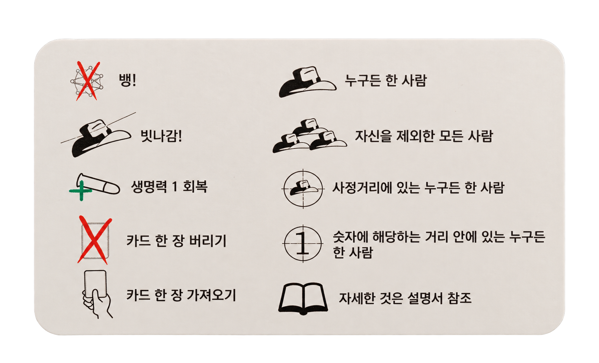
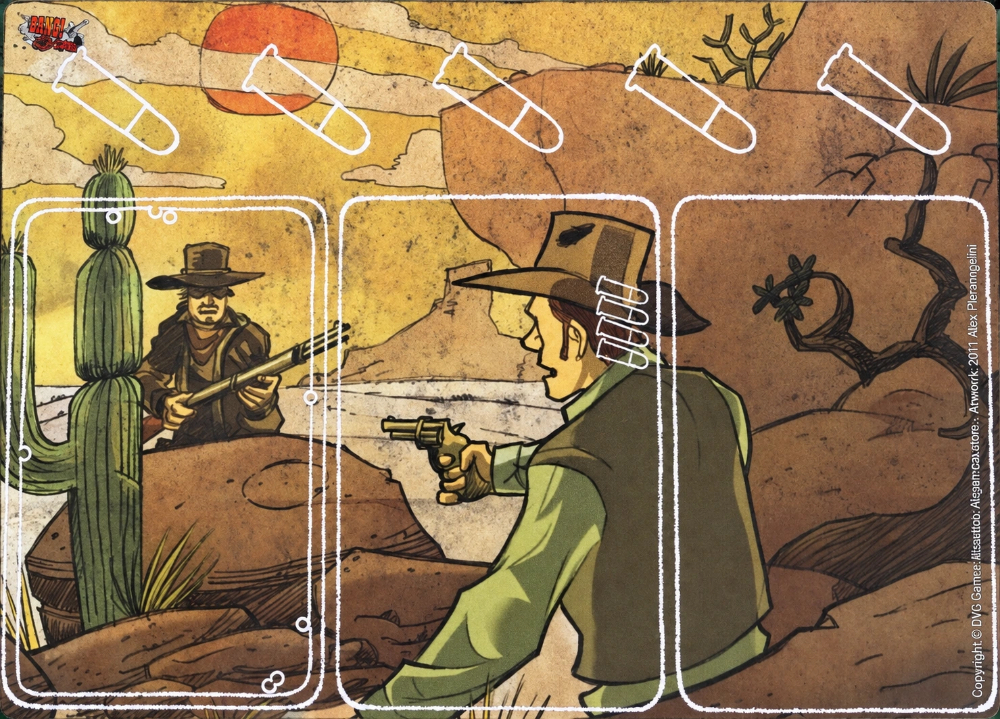
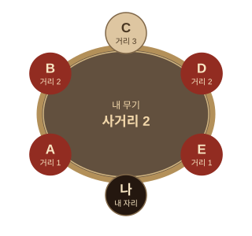

역할 카드
누구와 같은 편인지, 어떻게 이기는지를 정해요. 보안관만 공개하고 나머지는 비밀로 둬요.
서부 개척 시대의 총격전 게임에서
정체를 숨기고, 내 편을 찾아 살아남으세요.
밑에서 인원 수를 고르시면 초심자를 위한 설명이 시작됩니다.
함께하는 인원을 골라 주세요
카드 이미지를 눌러 자세한 역할을 확인하세요.
어떤 카드로 이뤄져 있는지 간단히 설명하는 페이지입니다. 가볍게 읽고 넘어가세요.
누구와 같은 편인지, 어떻게 이기는지를 정해요. 보안관만 공개하고 나머지는 비밀로 둬요.
나의 시작 생명과 특수 능력을 정해요. 모두 앞면으로 공개해 놓아요.
뱅! 카드로 공격할 수 있는 사거리를 정해요. 무기를 놓는 것만으로 공격하는 것은 아니에요. 내 앞에는 무기 1개만 놓고, 새 무기를 놓으면 기존 무기를 버려요.
사용 후 더미에 버려요. 뱅!, 맥주, 역마차 등이 있어요.
앞에 놓아 효과를 유지해요. 무기·술통 등이 있어요. 같은 이름의 카드는 한 사람 앞에 1장만 놓을 수 있어요.
인물 카드는 공개해 놓아요.
카드의 총알 표시를 보고 시작 생명을 확인해요.


01 · 공격과 막기
빗나감! 1장을 내면 피해 없이 끝.
막지 못하면 총알(생명) 1개를 잃어요.
02 · 무기
사거리 숫자 이내의 거리에 있는 사람을 공격할 수 있어요.
거리는 양쪽으로 세었을 때 더 짧은 쪽을 사용합니다.
탈락한 자리는 거리에서 빠져요!

A · B · D · E는 공격 가능
C는 거리 3이라 사거리 밖이에요.
03 · 회복
일대일 상황(생존자 2명)에서는 사용할 수 없습니다.
손패 2장을 버리면 생명을 1 회복할 수 있어요.
내 차례 때 사용 가능하며, 모두가 생명 1을 회복합니다.
하지만 생명이 0일 때는 쓸 수 없어요.
04 · 차례 시작 전 판정
둘 다 내 앞에 있으면 다이너마이트 → 감옥 순서로 판정해요.
05 · 탈락
제거한 사람은 누구든 카드 3장을 보상으로 뽑아요.
다이너마이트로 죽으면 처치 보상이 없어요.
기관총·인디언!로 죽으면 쓴 사람이 책임져요.
즉시 게임이 끝나요.
배신자만 살아 있다면 배신자 승, 그 외에는 무법자 승이에요.
카드별 사용법을 확인하세요.
필요한 항목을 펼치면 설명이 나와요.
하지만 귀찮다면 카드가 궁금할 때 에서 찾아보시길 추천드립니다.
내 차례의 카드 사용 단계에 써요.
차례가 끝날 때는 현재 생명 수만큼만 손패를 남겨요.
차례 시작에 뽑는 2장과 별개예요.
차례가 끝날 때는 현재 생명 수만큼만 손패를 남겨요.
최종 거리 1인 상대에게 사용해요. 무기 사거리와는 관계없어요.
상대 손패에서는 보지 않고 무작위로 1장, 앞에 놓인 카드에서는 원하는 1장을 골라요.
거리에 상관없이 사용할 수 있어요.
상대 손패에서는 보지 않고 무작위로 1장, 앞에 놓인 카드에서는 원하는 1장을 골라요.
카드마다 대응이 달라요. 이미지를 누르면 자세히 볼 수 있어요.
빗나감!과 술통으로 막을 수 있어요.
뱅! 카드를 버리지 못하면 생명을 1 잃어요.
빗나감!·술통으로는 못 막아요.
지목당한 사람부터 뱅! 카드 1장씩.
먼저 못 버리거나 포기하면 생명 1을 잃어요.
빗나감!·술통으로는 못 막아요.
슬랩 더 킬러의 뱅! 카드에는 막기 효과 2회가 필요해요. 기관총에는 적용하지 않아요.
이 순서대로 진행해요
보안관부터 시작해 시계 방향으로 진행해요.
인물 능력이 있다면 해당 규칙이 우선해요.
카드 더미 위에서 손패로 가져와요.
대부분 원하는 만큼 (뱅! 카드는 1장만). 아무것도 안 써도 돼요.
현재 생명 수만큼만 남기고 버려요. 내 앞의 카드는 안 세요.
아래 조건 중 하나가 되면 즉시 게임이 끝나요.
보안관이 살아 있고, 무법자와 배신자가 모두 탈락하면 보안관 팀이 이겨요.
보안관이 탈락하고, 배신자 혼자 살아남으면 배신자가 이겨요. 다른 사람이 남아 있다면 배신자의 승리가 아니에요.
보안관이 탈락하면 무법자가 이겨요. 단, 배신자 혼자 살아남은 경우에는 배신자가 이겨요.
보안관이 살아 있고 무법자나 배신자가 남아 있다면 게임을 계속해요.
보안관·부관·무법자는 자기 팀이 이기면 먼저 탈락했어도 함께 이겨요.
카드 이름과 쉬운 규칙을 함께 봐요.
카드를 누르면 자세한 설명이 열려요.
찾는 카드가 없어요. 다른 이름으로 검색해 보세요.